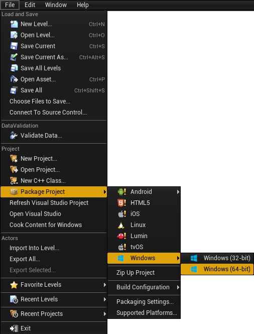

An Unreal project needs to be packaged before it can be distributed. This process produces the engine executables and bundles up all of the assets that are needed for the client to start up the engine by itself without starting it from the editor or Visual Studio.
This process will compile the C++ code for Holodeck and "cook" the .uasset
files (including blueprints!) into one large .pak file, and create the
directory structure needed.
Adding Holodeck Worlds
The finished package will only contain the worlds (called "levels" in the editor) that are added into the project. The holodeck-engine repo only contains the example level. The rest of the worlds are found in the holodeck-worlds repo, which contains multiple vanilla unreal projects. To add them to the project, clone the worlds repo and copy the Content folder from the worlds you want to add. Paste this folder into the holodeck-engine repo and allow it to overwrite any conflicting files.
Note: Because these worlds contain purchased assets, they are only available to official BYU PCCL members. Others will have to develop their own worlds in the holodeck-engine.
Cooking Content
When you are running holodeck-engine from Visual Studio, you may need to cook
the content to "refresh" the assets, levels, and blueprints that
holodeck-engine reads.
From Unreal Editor:
File ➡ Cook Content for Windows/Linux
Packaging holodeck-engine
From Unreal Editor:
-
File ➡ Package Project ➡ Windows x64/Linux

-
Select an output folder
I usually pick "dist" inside the root of the holodeck-engine repo
Place in install directory
In order to be able to call holodeck.make(), you will need to place the
packaged engine in holodeck's package install directory.
Make sure the version in the path matches the output of the
holdoeck.util.get_holodeck_version command.
- Copy contents of
distfolder into the package path found above.
+ worlds
|--+ PackageName
|-- config.json
|-- WorldName-ScenarioName.json
|--+ LinuxNoEditor (output from dist folder)
| UE4 build output
- Copy configurations from
holodeck-configsfollowing the file structure above.
IMPORTANT The config.json file is written for Linux, and must be edited to work in windows.
Edit the platform and path fields to the following:
`"platform": "windows"`
`"path": "WindowsNoEditor/Holodeck/Binaries/Win64/Holodeck.exe"`